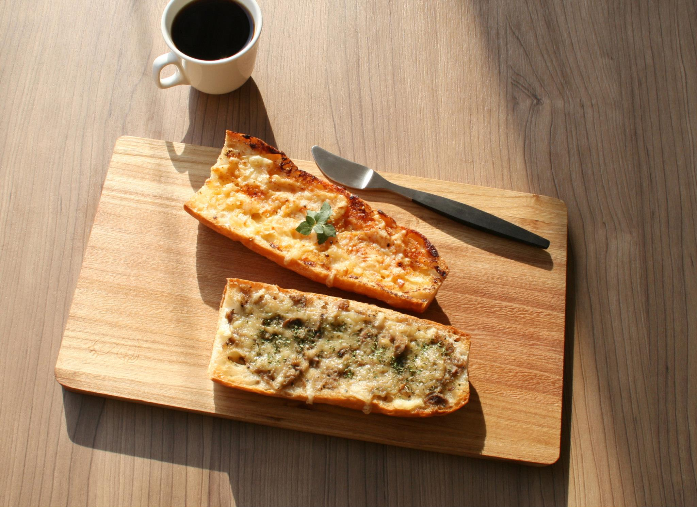
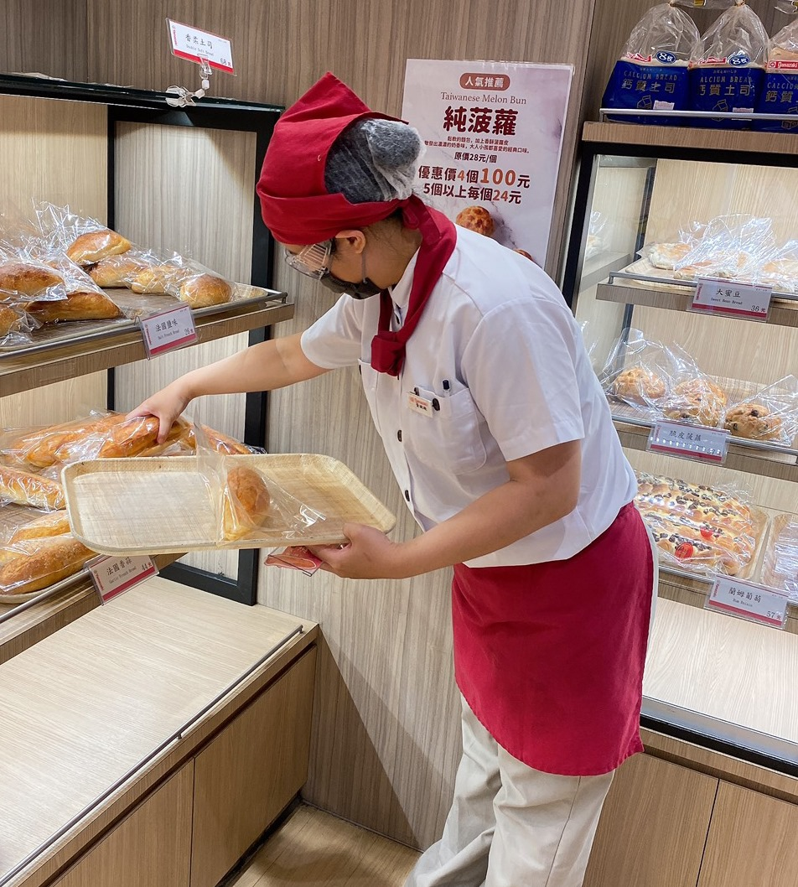
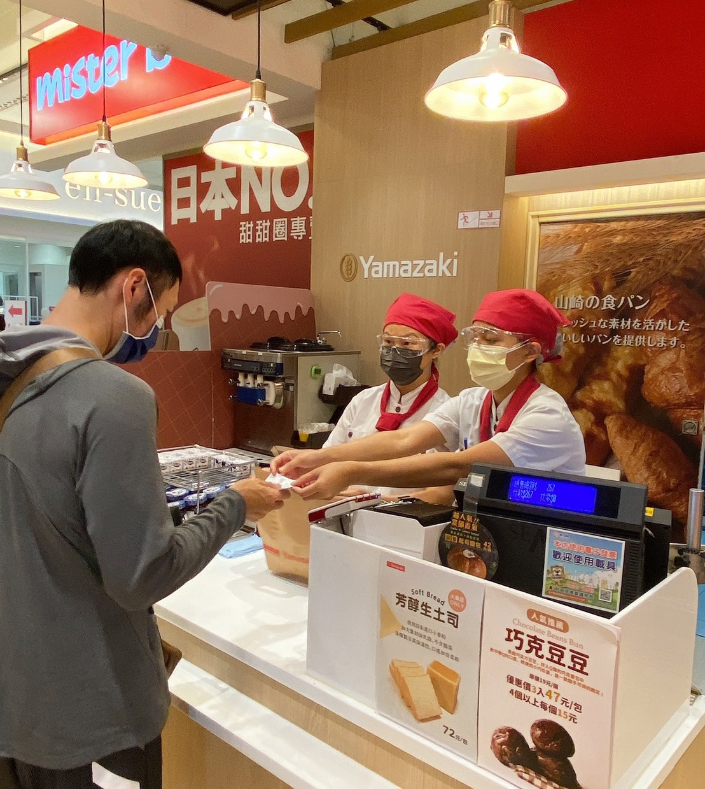

首頁
關於山崎
產品介紹
門市據點
聯絡我們
源自於日本的山崎麵包
關於山崎

日本山崎自創業以來因為引進歐美的先進技術而卓越成長並希望以此經驗技術可以對東南亞吃的文化帶來貢獻故 於1981年進駐香港之後在香港廣受各方好評於1988年設立了中央工廠,日本山崎自此開始了海外的連鎖烘培事業。

而台灣山崎的誕生是在1987年,崇光百貨公司成立台灣第一家山崎包專賣店,為了提供給顧客更多元且完整的產品及服務,於2000年,在板橋火車站開了第一家咖啡複合式面,至今包含複合式店面已有多家分店分飾全台。

台灣山崎自創始來一直堅持慎選原料,每天現場烘焙提供最新鮮的產品, 且不斷開發新產品,如:手工現做的三明治、柔軟的吐司、銅鑼燒、大福等多樣的日式風味的點心,讓顧客無論何時 都可以買到自己喜愛的產品,享受美味的麵包。